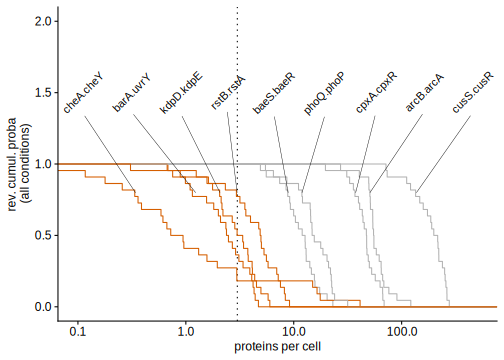

Identification of single-molecule trigger candidates in MS data
Thomas Julou
09 October, 2020
Aim: explore whether some signal transduction pathway featuring positive feedback are likely to be metastable in the same sense as the lac operon is, i.e. have one of there components expressed at low level in the repressed state and stochastically present/abset in a given cell.
From a very general perspective, on the order of half of the genome is expressed in average less than once per cell cycle. Hence it is expected that at least some signal transduction pathway will fall in this category.
To address this using data, I used the quantitative MS measurements done in 28 conditions by Schmidt, et al. 2016. I followed two lines with those:
- Check the expression levels of genes involved in simple regulatory pathways known to feature positive feedbacks, namely two-component systems (2CS).
- Check the expression level of genes involved in transport and metabolism of sugars, since those are typically induced upon addition of the sugar using a positive feedback mechanism (cf lactose, xylose, arabinose, galactose, etc).
myqms_file <- tempfile() # "/Users/julou/Documents/Zotero/storage/YMGBBIKN/nbt.3418-S2.xlsx"
download.file("https://media.nature.com/original/nature-assets/nbt/journal/v34/n1/extref/nbt.3418-S2.xlsx", myqms_file)
myqms <- bind_cols(
readxl::read_xlsx(myqms_file, "Table S6", skip=2, range="A3:AC2362"),
readxl::read_xlsx(myqms_file, "Table S6", skip=2, range="BV3:BZ2362"),
) %>%
gather(condition, n, 8:29) %>%
# add cv
left_join(
bind_cols(
readxl::read_xlsx(myqms_file, "Table S6", skip=2, range="C3:C2362"),
readxl::read_xlsx(myqms_file, "Table S6", skip=2, range="AZ3:BU2362"),
) %>%
gather(condition, cv, 2:23)
) %>%
mutate(n=as.numeric(n), cv=as.numeric(cv))
myqms_conds <- bind_cols(
readxl::read_xlsx(myqms_file, "Table S28", skip=2, range="A3:D22"),
readxl::read_xlsx(myqms_file, "Table S28", skip=2, range="J3:J22")
) %>%
set_names(c("condition", "length", "width", "growth_rate", "volume"))The measurement CV is ~ 20% for 10 proteins per cell and ~ 50% for 1 protein per cell:
myqms %>%
# filter(!is.na(n), !is.na(cv)) %>%
# group_by(Gene) %>%
# filter(n>4) %>%
# summarise(n=median(n), cv=median(cv)) %>%
ggplot(aes(n, cv)) +
geom_point(stroke=0, alpha=.2) +
stat_smooth(method='lm', col='red', data=filter(myqms, between(n, 0.1, 30))) +
scale_x_log10() + scale_y_log10() +
coord_cartesian(xlim = c(1e-2, 1e5)) +
NULL 
Two-components systems
We consider all two-components systems listed in ecocyc.org.
twocomp_genes <- tribble(
~"kinase", ~"TF",
"cheA", "cheY",
"arcB", "arcA",
"atoS", "atoC",
"baeS", "baeR",
"barA", "uvrY",
"basS", "basR",
"btsS", "btsR",
"cpxA", "cpxR",
"creC", "creB",
"cusS", "cusR",
"dcuS", "dcuR",
"dpiB", "dpiA",
"envZ", "ompR",
"evgS", "evgA",
"glrK", "glrR",
"hprS", "hprR",
"kdpD", "kdpE",
"narQ", "narL",
"narX", "narL",
"ntrB", "ntrC",
"phoQ", "phoP",
"phoR", "phoB",
"phyS", "phyR",
"qseC", "qseB",
"rstB", "rstA",
"uhpB", "uhpA",
"zraS", "zraR"
)Out of 27 2CS, there are 9 for which both proteins are measured and 12 for which only the TF is measured.
- The kinase is at least 10x less abundant than the TF for all 2CS measured.
- There are 6 out of 9 2CS with a kinase at ≤ 10-20 proteins per cell in most conditions. In addition, 5 out of 12 TFs (measured without their kinase) are present at ≤ 10 proteins per cell in most conditions. Altogether this suggests that on the order of half the 2CS found in E. coli are regulatory pathway with PF where at least one of the 2 components is likely to be stochastically present/absent in a given cell in a give condition.
NB: for a Poisson distribution of mean \(\lambda\), the fraction at 0 is \(exp(-\lambda)\). So mean expression must be ≤ 3 per cell in order to get ≥ 5% of cells with zero proteins.
(myplots[['2cs_qms']] <- myqms %>%
semi_join(twocomp_genes %>% gather(Type, Gene)) %>%
left_join(twocomp_genes %>% mutate(Name=paste(kinase, TF, sep=".")) %>% gather(Type, Gene, -Name)) %>%
ggplot(aes(n, col=Type, group=Gene)) +
facet_wrap(~Name, nrow = 3) +
geom_vline(xintercept = 3, lty='dotted') +
stat_ecdf(aes(y=1-..y..)) +
scale_x_log10() +
coord_cartesian(xlim=c(8e-2, 8e3)) +
labs(x="proteins per cell", y="rev. cumul. proba (all conditions)") +
theme(legend.position = 'top') +
NULL )Summary plot for kinases only:
(myplots[['2cs_qms_kinases']] <- myqms %>%
semi_join(twocomp_genes %>% gather(Type, Gene)) %>%
left_join(twocomp_genes %>% mutate(Name=paste(kinase, TF, sep=".")) %>% gather(Type, Gene, -Name)) %>%
filter(Type=='kinase') %>%
group_by(Gene) %>% mutate(SMT=quantile(n, 1-.8) < 3) %>%
(function(.df)
ggplot(NULL) +
geom_vline(xintercept = 3, lty='dotted') +
stat_ecdf(aes(n, 1-..y.., col=SMT, group=Gene), data=.df) +
ggrepel::geom_text_repel(aes(n, .8, label=Name), data=.df %>% group_by(Gene, Name) %>% summarise(n=quantile(n, 1-.8)),
nudge_y = 0.7,
direction = "x",
angle = 45,
vjust = 0.5,
# hjust = 2,
segment.size = 0.2
) +
scale_x_log10() +
coord_cartesian(xlim=c(0.1, 500), ylim=c(0, 2)) +
scale_color_manual(values=c('TRUE'=ggCustomTJ::qual_cols[2], 'FALSE'='gray70')) +
labs(x="proteins per cell", y="rev. cumul. proba\n(all conditions)") +
theme(legend.position = 'none') +
NULL)
)
Enrichment in GO categories
Exploratory…
Question: can we find clear sign of enrichment for low expressed genes in certain GO categories?
myqms %>%
# bind_rows(., mutate(., `Annotated functional COG group (description)`='All')) %>%
group_by(`Annotated functional COG group (description)`, Gene, `Uniprot Accession`) %>% nest() %>%
mutate(n_75pc=map_dbl(data, ~quantile(.$n, .75, na.rm=TRUE)),
Type = ifelse(n_75pc<50, "low", "high")) %>%
group_by(`Annotated functional COG group (description)`) %>%
summarise(n_low=sum(Type=='low'), n=n(), p=n_low/n) %>% #, n_na=sum(is.na(Type))) %>%
mutate(all_low=sum(n_low), all=sum(n), p_all=all_low/all, fc=p/p_all) %>%
# slice(1) %>%
# rowwise() %>%
mutate(ctable=pmap(list(n_low, n, all_low, all), ~matrix(c(..1, ..2-..1, ..3, ..4-..3), ncol=2, byrow=TRUE)),
ftest=map(ctable, ~fisher.test(., alternative='greater')),
pvalue=map_dbl(ftest, ~.$p.value)) %>%
select(-all_low, -all, -ctable, -ftest) %>%
arrange(pvalue) %>%
(knitr::kable)(digits=2)| Annotated functional COG group (description) | n_low | n | p | p_all | fc | pvalue |
|---|---|---|---|---|---|---|
| Replication, recombination and repair | 59 | 103 | 0.57 | 0.31 | 1.82 | 0.00 |
| Cell motility | 14 | 16 | 0.88 | 0.31 | 2.78 | 0.00 |
| Transcription | 67 | 150 | 0.45 | 0.31 | 1.42 | 0.00 |
| NA | 87 | 215 | 0.40 | 0.31 | 1.29 | 0.00 |
| Signal transduction mechanisms | 36 | 79 | 0.46 | 0.31 | 1.45 | 0.01 |
| Defense mechanisms | 13 | 24 | 0.54 | 0.31 | 1.72 | 0.02 |
| Cell wall/membrane/envelope biogenesis | 54 | 142 | 0.38 | 0.31 | 1.21 | 0.06 |
| Inorganic ion transport and metabolism | 36 | 96 | 0.38 | 0.31 | 1.19 | 0.13 |
| Secondary metabolites biosynthesis, transport and catabolism | 11 | 27 | 0.41 | 0.31 | 1.30 | 0.20 |
| General function prediction only | 71 | 206 | 0.34 | 0.31 | 1.10 | 0.20 |
| Carbohydrate transport and metabolism | 54 | 169 | 0.32 | 0.31 | 1.02 | 0.47 |
| Cell cycle control, cell division, chromosome partitioning | 8 | 28 | 0.29 | 0.31 | 0.91 | 0.69 |
| Energy production and conversion | 45 | 157 | 0.29 | 0.31 | 0.91 | 0.79 |
| Coenzyme transport and metabolism | 31 | 110 | 0.28 | 0.31 | 0.90 | 0.79 |
| Lipid transport and metabolism | 16 | 61 | 0.26 | 0.31 | 0.83 | 0.84 |
| Function unknown | 47 | 177 | 0.27 | 0.31 | 0.84 | 0.93 |
| Nucleotide transport and metabolism | 14 | 72 | 0.19 | 0.31 | 0.62 | 0.99 |
| Intracellular trafficking, secretion, and vesicular transport | 2 | 25 | 0.08 | 0.31 | 0.25 | 1.00 |
| Posttranslational modification, protein turnover, chaperones | 13 | 97 | 0.13 | 0.31 | 0.43 | 1.00 |
| Amino acid transport and metabolism | 43 | 239 | 0.18 | 0.31 | 0.57 | 1.00 |
| Translation, ribosomal structure and biogenesis | 20 | 164 | 0.12 | 0.31 | 0.39 | 1.00 |
| RNA processing and modification | 0 | 1 | 0.00 | 0.31 | 0.00 | 1.00 |
Sugars transport and metabolism
We use the GOC (GO category) “Carbohydrate transport and metabolism”. There are 40 out of 169 genes which are express below 20 protein per cell in average in at least 3/4 of all conditions:
myqms %>%
filter(`Annotated functional COG group (description)`=="Carbohydrate transport and metabolism") %>%
group_by(`Annotated functional COG group (description)`, Gene) %>% nest() %>%
mutate(n_75pc = map_dbl(data, ~quantile(.$n, .75, na.rm=TRUE)),
n_25pc = map_dbl(data, ~quantile(.$n, .25, na.rm=TRUE)),
Type = ifelse(n_25pc<3, "low", "high")) %>%
# filter(Type=='low') %>% arrange(Gene) %>% print(n=200)
unnest() %>%
ggplot(aes(n, col=Type, group=Gene)) +
facet_wrap(~`Annotated functional COG group (description)`) +
stat_ecdf(aes(y=1-..y..), alpha=.4) +
scale_x_log10() +
coord_cartesian(xlim=c(1e-2, 1e5)) +
labs(x="proteins per cell", y="rev. cumul. proba (all conditions)") +
NULL treC, idnK, yiaO, sgcX, garD, malS, yphF, fucI, srlB, xylG, yihT, kbaZ, kduI, lsrK, mngB, treF, yicI, srlE, uidA, dgoA, dgoK, fucA, hyi, lsrA, malF, mdfA, pgaB, shiA, xylH, yliI, malZ, uhpT, uxaB, chbA, garL, nadK, yciM, yeiQ, ygbM, ytfR
Several of them feature promising properties for metastability of the corresponding pathway according to their ecocyc summary:
- FucI can function as both an L-fucose isomerase and a D-arabinose isomerase, the first enzymes of the L-fucose and D-arabinose degradation pathways, respectively. However, production of FucI is only induced by L-fucose.
- MalS is one of two α-amylases present in E. coli. [[I assume that there is a PF downstream]]
- MalF is an integral membrane component of the maltose ABC transporter. [[I assume that there is a PF downstream]]
- FucA can function as both an L-fuculose-phosphate aldolase and a D-ribulose-phosphate aldolase, the third enzyme of the L-fucose and D-arabinose degradation pathways, respectively. However, production of FucA is only induced by L-fucose. [[I assume that there is a PF downstream]]
- KduI (…) appeares to be able to utilize both glucuronate and galacturonate, perhaps catalyzing the same reaction as UxaC. (…) Expression of kduI is increased in the presence of galacturonate and glucuronate.
- LsrK is a kinase that is able to phosphorylate the quorum-sensing autoinducer molecule AI-2. [[would have to check that its expression is induced by AI-2]]
- lsrA is predicted to encode the ATP-binding component of an AI-2 ABC transporter.
- srlE is acomponent of the sorbitol-specific PTS. [[I assume that there is a PF downstream]]
- uiaD β-D-glucuronidase catalyzes the cleavage of a wide variety of β-glucuronides. (…) Methyl-β-glucoronide and fructuronate induce production of the enzyme.
- xylG encodes the predicted ATP-binding subunit of a high-affinity xylose uptake system.
- XylH is the predicted integral membrane subunit of a high-affinity, ATP dependent xylose uptake system. [[I assume that there is a PF downstream]]
- Based on sequence similarity, YiaO is the periplasmic solute-binding component of the YiaMNO Binding Protein-dependent Secondary (TRAP) transporter
- ytfR is the putative ATP binding subunit of the galactofuranose ABC transporter.
Not sure whether those are also of interest:
- The MdfA protein, also known as Cmr, is a multidrug efflux protein belonging to the major facilitator superfamily (MFS) [Paulsen96]. Overexpression of MdfA confers resistance to a broad range of antibiotics and toxic molecules.
- UhpT is a hexose phosphate transporter that is a member of the Major Facilitator Superfamily (MFS).
- PgaB is an outer membrane lipoprotein that is required for the partial de-N-acetylation and hydrolysis of (…) an exopolysaccharide that is a key component of the biofilm matrix of many pathogenic bacteria.